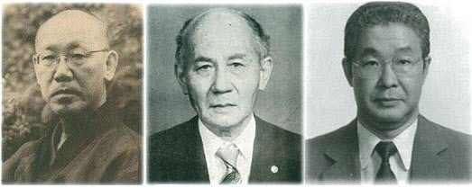
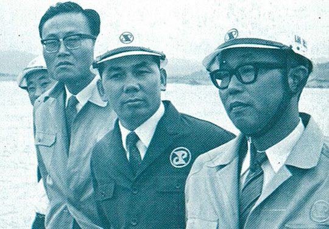
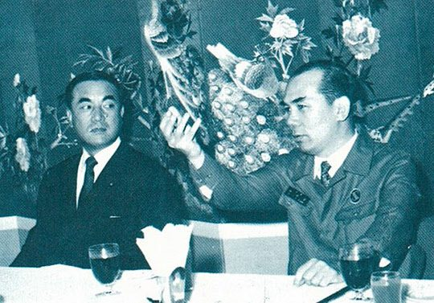
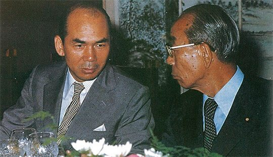

연재일 2014-12-26출처 조선일보 프리미엄조선 연재
8월의 도쿄는 서울보다 뜨거웠다. 박태준은 맨 먼저 야스오카를 찾아간다. 포철에 대해 협력을 아끼지 않겠다고 언약도 해주고 서신도 보내준 이나야마를 또다시 찾아가는 이번 길에도 박철언, 야기 노부오와 함께 야스오카의 방부터 거쳐야 더 힘이 붙을 것이고, 일본 정재계의 거물들과 접촉하는 일도 그래야 더 수월해지고 더 힘이 붙을 것이라고, 그는 확신하고 있었다. 야스오카는 박태준과 포항제철의 막강한 후원자였다.
1969년 상반기 내내, 그해 여름 내내, 야스오카는 포철을 지원하는 막후 활동을 쉬지 않았다. 박철언은 자서전 『나의 삶, 역사의 궤적』에서 이렇게 정리하고 있다.
<포항제철을 위한 야스오까의 집요한 막후 활동이 계속되었다. 야기와 나는 야스오까의 의중을 따라 야하따, 후지 제철사를 번갈아 빈번히 방문했다. 이나야마, 나가노, 양 거두의 합심과 협력으로 포철 문제는 일본철강연맹의 소관이 되었다. 포항제철은 연산 103만 톤을 기간으로 하는 종합제철소 건설 계획을 일본철강연맹에 제시했다. 철강연맹은 포항제철의 계획을 검토하고 그 타당성을 인정하는 공한을 발부했다.
69년 8월, 한일각료회의가 동경에서 열리게 되었다. 박태준은 사전 공작을 위해 일본으로 왔다. 그는 동경에 도착하는 대로 야스오까를 찾아왔다. 박태준은 일본철강연맹이 포항제철의 건설 계획을 적극적으로 검토하게 한 야스오까의 전력에 대하여 감사를 표하고, 한일각료회담 이전에 정‧재계에 대한 접촉을 원만히 할 수 있게 주선해 줄 것을 청원했다.>
박태준과 포항제철을 위해 헌신해준 야스오카(왼쪽부터), 야기, 박철언 3인의 1960년대 모습.
과연 야스오카의 위력은 대단한 것이었다. 이때(1969년 8월) 박태준의 활약상은 박철언의 자서전에 잘 찍혀 있다.
<야스오카는 즉각 주선의 손을 써서 박태준으로 하여금 정계에서 기시 노부스께(岸信介), 가야 오키노리(賀屋興宣), 지바 사부로(千葉三郞), 이찌마다 나오또(一萬田尙登), 재계에서 해외경제협력기금 총재 다까스기 신이찌(高彬晉一), 경단련 회장 우에무라 코고로(植村甲午郞) 등 주요 인사를 만나게 하였다.
박태준이 만난 이들은 모두가 입을 모아 포항제철의 출현을 축복하고 지지했다.
야스오까가 총리 대신 사또 에이사꾸(佐藤榮作)에게 포항제철에 관한 문제를 진지하게 말했다는 하야시 시게유끼의 말이 야기를 통해서 전해졌다. 수일 후에 야기는 내각 관방(官房)의 전갈을 받고 박태준과 같이 총리 관저로 관방부장관 기무리 도시오(木村俊男)를 찾았다. 셋이 하이어를 타고 총리 관저로 갔다. 야기와 박태준이 기무라를 만나는 동안 나는 대기실에 앉아 기다렸다. 상기된 두 사람과 나는 관저를 나와서 차에 올랐다. 차가 총리 관저의 문을 나서자 야기가 입을 연다.
“일은 성사됐어요. 기무라 부장관의 말은 이래요. 사또 총리는 포항제철 건설 자금에 관한 한국정부의 제의를 수락할 것이다. 박 대통령에게 그 취지를 전하라. 그러나 일한각료회의를 앞두고 이 말이 누설되지 않도록 주의하라는 것이었어요.”
박태준으로서는 하늘이 주는 일대 복음이었다. 이어 박태준은 야스오까의 주선으로 외상(外相) 아이찌 기이찌(愛知揆一), 대장(재무)상 후쿠다 다께오(福田赳夫), 통산상 오히라 마사요시(大平正芳) 등을 두루 만났다.>
그때 그 고장(일본)에서 위에 적은 이름들이 “차지하는 무게와 권위”에 대하여 박철언은 “하늘을 찌르고도 남음이 있었다”라고 했다. 그럴 만하다. 총리, 장관들, 재계 최고실력자들이 두루 등장하는 것이다. 그리고 박철언은 “불혹의 한국인 박태준이 연일 이들을 차례차례 거침없이 만나고 다녔다면 누구나 쉬이 믿을 수 있는 일이 아니었다. 그 믿을 수 없는 일이 눈앞에서 현실로 일어났고 이어졌다. 야스오카가 있었음으로, 그를 그리하게 한 박태준이 있음으로 가능했던 일이다”라고 했다.
포철 현장을 방문한 일본 통산성 정책국장과 박태준 사장.
일본 정재계 지도자들의 존경과 신망을 한 몸에 받는 야스오카를 감동시킨 박태준. 그의 그 저력은 무엇이었을까? 크게 네 가지로 분석할 수 있다.
첫째는 박태준의 완벽한 일본어 구사와 일본문화 체득이다. 그는 1933년의 여섯 살부터 1945년의 열여덟 살까지 일본에서 성장했다. 그때 습득한 일본어와 체득한 일본문화가 이윽고 ‘근대화 조국’을 위한 보배로운 능력으로 발현된 것이다. 일본어를 완벽하게 구사할 수 없었다면, 일본인의 문화적 특성을 제대로 알지 못했다면, 그는 대학자로서도 저명한 야스오카에게 자신의 이상과 신념을 제대로 밝히지 못했을 것이다.
둘째는 1964년 1월 야스오카가 박정희의 특사로 장기간 방일한 박태준과 초대면하는 자리에서 과연 한국 대통령이 가장 신뢰하는 인물이라는 귀띔에 걸맞은 인물이라는 강렬한 첫인상을 받았던 점이다(연재 21). 바로 그 인물이 맡은 국가적 대사(포항종합제철)이니 야스오카는 듬직했을 뿐만 아니라 그의 부탁은 곧 박정희의 뜻이 반영된 것이라고 믿을 수 있었다. 이러한 야스오카의 박태준에 대한 신뢰는 그가 대일관계를 헤쳐 나가는 길에서 보이지 않는, 그러나 든든하고도 큼직한 자산이었다.
셋째는 박태준의 강렬하고 순정한 무사(無私) 애국심이다. 대가는 대가를 알아보는 것처럼, 애국자는 애국자를 알아본다. 야스오카는 겨우 불혹을 넘어선 한국인과 대화하는 동안 난국에 빠진 조국을 위해 헌신하겠다는 그의 뜨겁고 순수한 영혼을 확인했을 것이다. 불타는 정열과 의지를 안으로 모을 줄 아는 침착성과 지혜도 발견했을 것이다.
넷째는 야스오카의 한국관과 박태준의 일본관이다. 한일관계를 일의대수에 비유하면서 일본의 과거를 사과하고 한국을 돕는 것이 일본에도 도움이 된다는 야스오카의 사고, 일본을 알아야 이용할 수 있고 이길 수 있다는 박태준의 용일주의(用日主義). 이것은 즐거운 손뼉소리를 낼 수 있는 정신적 조건이었다.
야스오카의 한국관에는 극단적 냉전체제 속에서 한국이 맡은 ‘반공 방파제론’도 포함돼 있었다. 먼저 야스오카가 일본철강연맹 회장 이나야마에게 전화를 한 뒤, 박철언은 야스오카의 뜻을 받아 야기와 함께 이나야마를 처음 찾아갔던 자리에서 나눈 대화를 명확히 기억했다.
<“야스오까 선생의 견해는 간단명료합니다. 한국은 공산세력에 대치해서 전방 방어를 맡고 있는 나라입니다. 한국은 제철에 관한 한 북측에 비해서 빈약합니다. 이는 보강해야 합니다. 두 나라는 일의대수의 상호관계에 있다고 믿고 계십니다.”
“예. 야스오까 선생의 의견은 강경하셨어요. 옳은 말씀이셨습니다. 나라의 장래를 그르치지 않기 위해서도 선생의 의견은 존중되어야 하겠지요.”
야스오까의 측근 야기 앞에서 이나야마의 발언은 신중했고 그 내용은 상적(商的) 경쟁이나 이해의 수위를 초월하는 것이었다.>
미무라 료헤이 미쓰비시상사 회장은 박태준의 일본관을 “우리가 비즈니스를 하기 위해 한국을 연구하는 것처럼, 박태준 회장은 일본을 아주 깊이 연구하고 있는 전략가”라고 간파했다. 일본 최장수 총리를 지낸 나카소네는 노년의 박태준에게 보낸 편지에서 “귀하는 일본에 와서 하나라도 더 한국에 도움될 것을 가져가려고 모든 것을 다했습니다. 귀하의 애국심에 나는 항상 감동합니다”라고 썼다.
통산상 시절의 나카소네와 박태준 사장.
박태준은 언제나 ‘일본을 아는 것이 먼저’라고 당당히 역설했다. 일본에 대한 그의 기본적 태도는 지일(知日)-용일(用日)-극일(克日)의 3단계를 밟아야 한다는 것. 감정에 압도당하면 일본을 알 수 없게 되고, 일본을 모르면 일본의 장점을 활용할 수 없게 되며, 그러면 일본에 앞설 수 없게 된다. 이렇게 정돈된 그의 전략이 확실한 실천으로 확립된 공간은 포스코다. 영일만에서 얻고 배운 일본기술을 광양만에서 보기 좋게 활용하고 극복하여 세계 최고의 광양제철소를 완성하게 된다.
정말 인생에는 피할 수 없는 운명이란 것이 있을까? 있다면, 그 운명을 관장하는 존재가 절대자인가? 문학이나 철학에서는 진리의 실재(진실)에 도달해야 하는 여정이 참다운 삶의 운명이라고 한다. 그 운명이 필생의 과업이다. 진실(진리의 실재)은 삶과 세계를 지배하는 근원적이고 궁극적인 주체다. 물론 ‘그것’은 언어와 시간을 초월하는 존재, 곧 절대자다.
인간의 예지로는 온전히 해명할 수 없는 것이 역사다. 역사라는 것도 절대자에 근접하는 무엇이다. 그래서 역사는 특정 개인에게 피할 수 없는 운명을 굴레처럼 덮씌우는가? 궁극에는 지칠 수밖에 없는 그에게 기껏 ‘영웅’이라는 말을 훈장처럼 수여하는 것인가? 한국산업화 역사에서 한참을 유심히 들여다봐야 하는 장면이 ‘박정희의 종합제철 의지와 1969년 8월 도쿄의 박태준’이다. 여기엔 4개의 돋보기, 곧 4가지 가정이 필요하다.
만약 박정희가 1964년 정초에 미국 유학을 떠나려는 박태준을 돌려세워서 ‘10개월간 특사’로 일본에 파견하지 않았다면? 그래서 박태준이 그때 이미 야스오카를 만나지 못했거나 박정희의 특사로서 그에게 강렬한 첫인상을 남기지 못했다면? 일찍이 박철언의 됨됨이와 능력을 알아본 박태준이 박정희에게 그의 존재를 알리고 ‘혁명정부 제1호 출국허가증’을 내줘서 그의 삶터인 도쿄로 보내주지 않았다면? 그리고 박태준과 박철언이 서로 돈독한 인간관계를 맺지 않았다면? 이 4가지를 모두 충족하지 못했더라면, 제철기술 제공에 대한 일본철강연맹의 협력이나 대일청구권자금 전용에 대한 일본정부의 협력을 1969년 8월에 ‘단번에 그토록 순탄하게’ 끌어내기란 대단히 어려웠을 것이다.
이게 역사가 특정 개인 네댓을 간택해서 관장했던 운명이 아니고 무엇이란 말인가?
총리 시절에 포철을 방문한 후꾸다와 박태준 사장.



